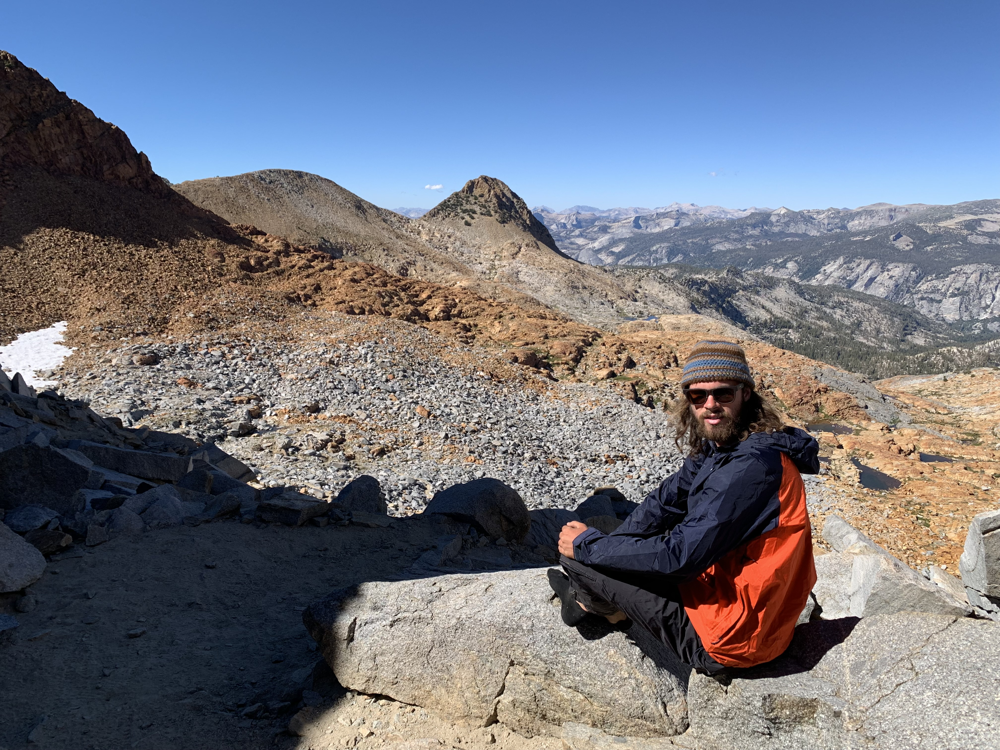
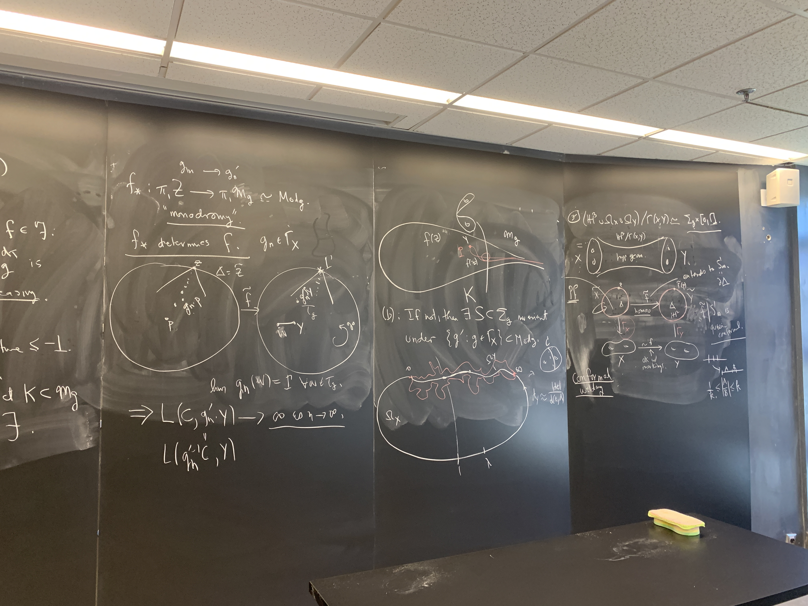
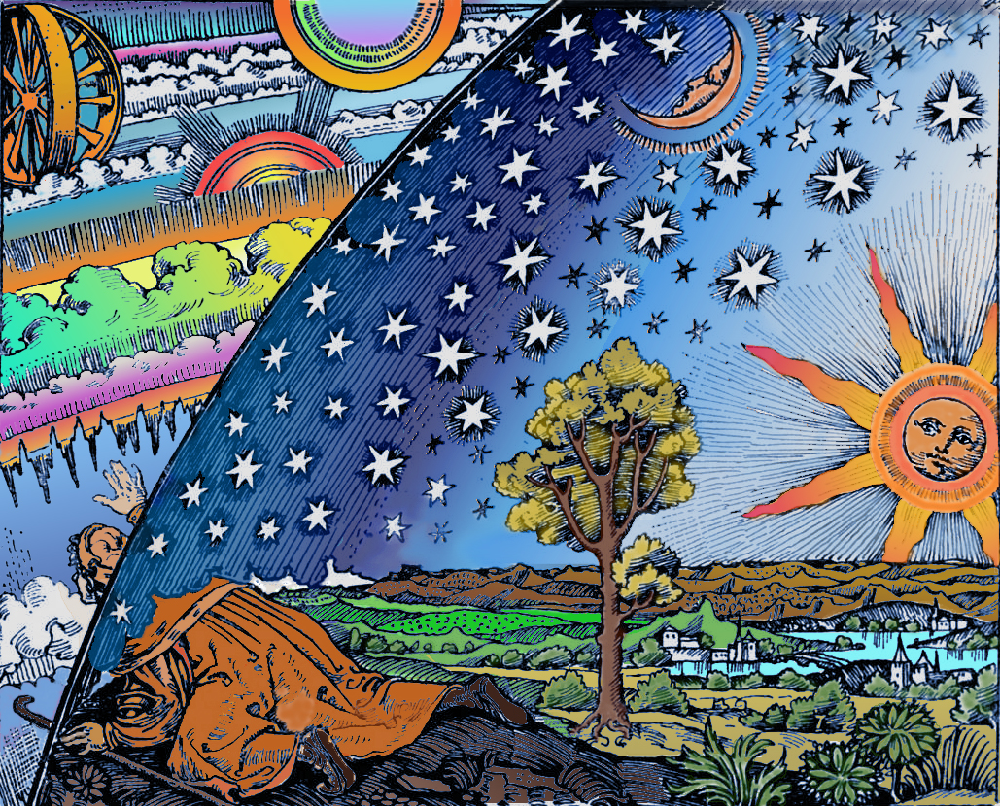
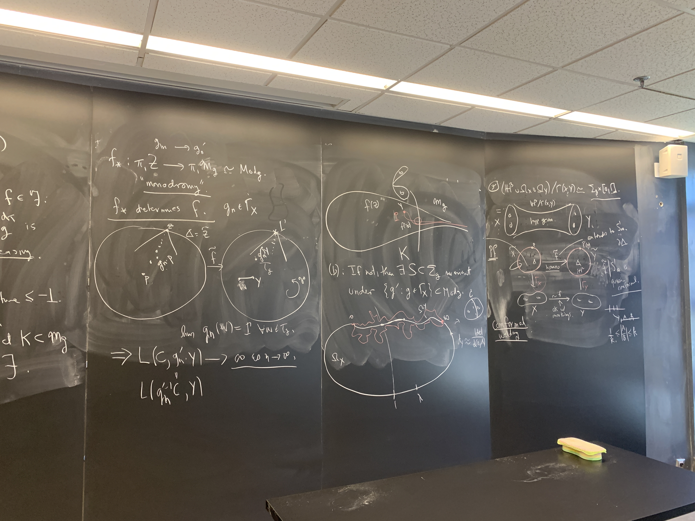
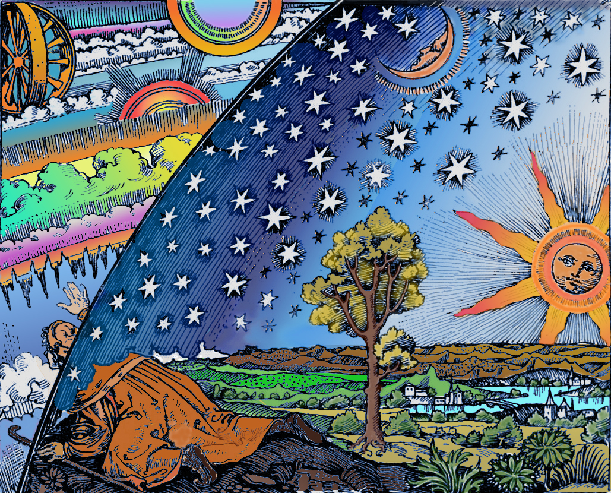

Quinn Brussel
[firstname]_[lastname] at brown dot edu

First Year Graduate Student
Brown University Department of Mathematics
I am from San Luis Obispo, CA, and graduated from Harvard in 2025. Outside of mathematics, I enjoy running, cycling, playing the guitar, Americana, and traditional stories.




